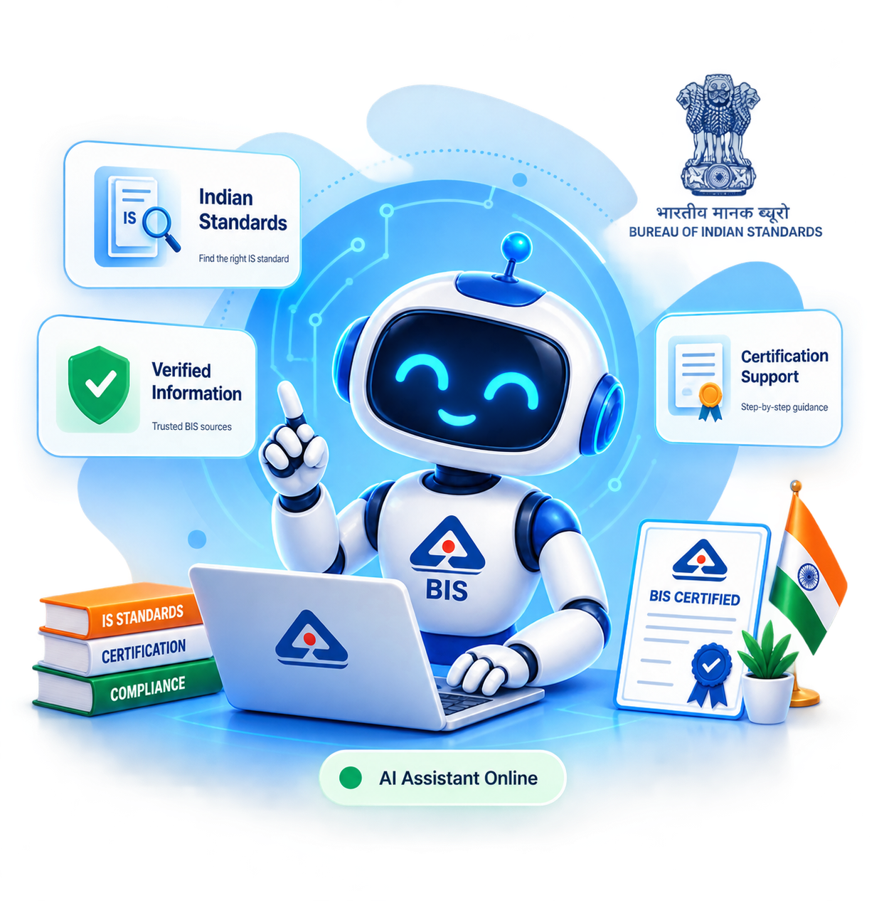

Understand BIS Standards. Get Certified.
Ask questions, find relevant Indian Standards, understand certification requirements and get step-by-step guidance with our AI-powered assistant.

🤖 Conversational AI
Ask questions about BIS standards and certification.
🛣️ BIS Journey Builder
Get step-by-step guidance for your BIS journey.
✅ Verified Sources
Get answers supported by verified BIS information.
🤖 BIS AI Assistant
Ask questions about BIS standards, certification and services.
💡 Suggested Questions
🛣️ BIS Journey Builder
Follow a simple step-by-step journey for BIS certification and compliance.
Identify Your Product
Tell us what product you manufacture.
Find Applicable Standard
Find the relevant Indian Standard for your product.
Check Requirements
Understand the applicable certification requirements.
Testing / Assessment
Understand the required testing or assessment.
Application
Follow the relevant application procedure.
Certification & Compliance
Maintain the applicable requirements and compliance.
📚 Verified BIS Sources
Get BIS information supported by verified sources.
📋 Indian Standards
Find information about relevant Indian Standards for different products.
View Source✅ Compulsory Certification
Check information about mandatory certification requirements.
View Source